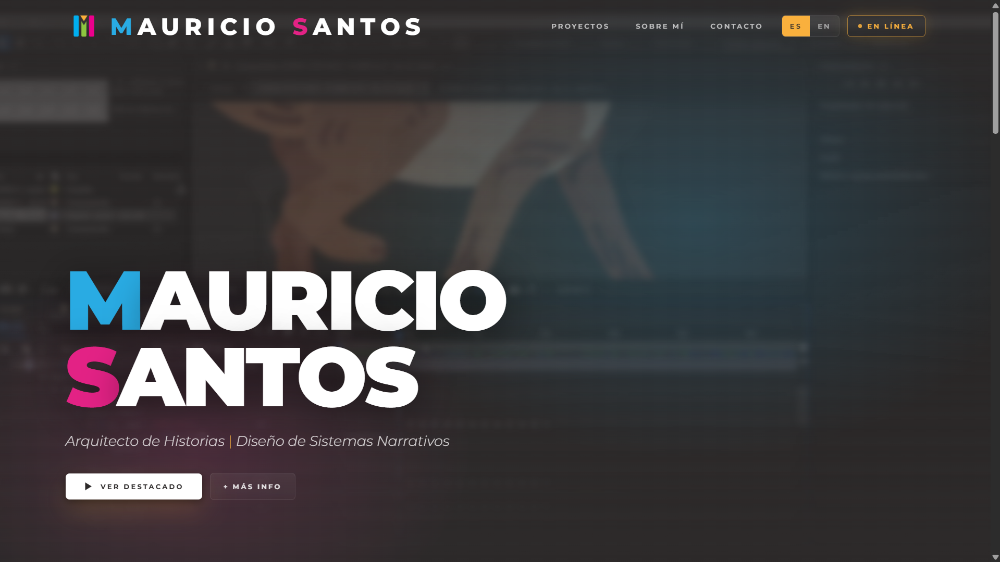
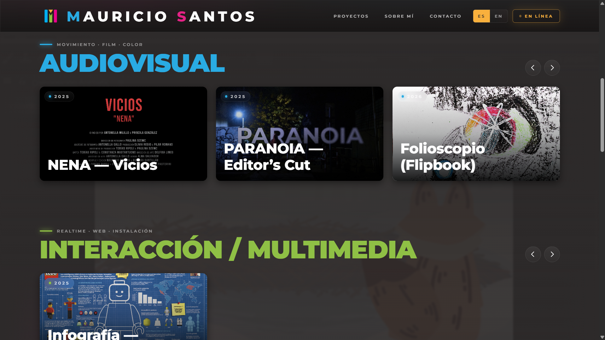
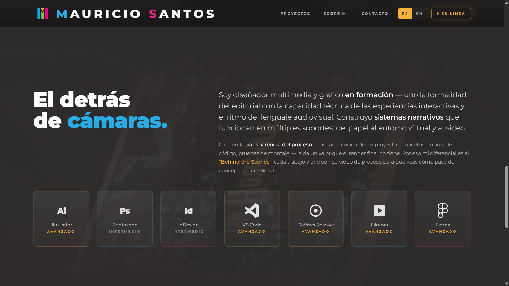
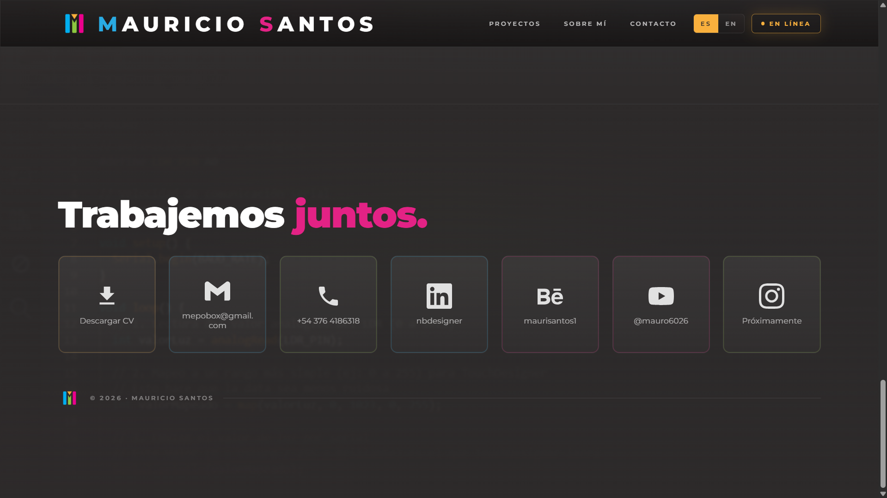

CH·01 · CONCEPTO
El detrás de cámaras.
Soy diseñador multimedia y gráfico en formación. Uno la formalidad del editorial con la capacidad técnica de las experiencias interactivas y el ritmo del lenguaje audiovisual. Construyo sistemas narrativos que funcionan en múltiples soportes: del papel al entorno virtual y al video.
¿Quién soy?
Diseñador en formación que conecta la formalidad del editorial con la capacidad técnica de interacción y el ritmo audiovisual.
¿Qué hago?
Construyo sistemas narrativos. No solo piezas estáticas: proyectos que funcionan en múltiples soportes — papel, entorno virtual, video.
¿Para quién?
Estudios de branding transmedia, agencias de contenido digital o desarrolladoras indie que necesiten alguien que entienda tanto de front-end como de montaje de video.
¿En qué creo?
En la transparencia del proceso: mostrar la cocina de un proyecto (bocetos, errores de código, pruebas de montaje) le da un valor que el render final no tiene.
Qué propongo
Mi diferencial es el "Behind the Scenes": cada uno de mis trabajos viene acompañado de su video/imagen de proceso para que se vea cómo pasé del concepto a la realidad. Uso mi base de diseño editorial para organizar la información y mis habilidades en montaje para que esa información se convierta en una experiencia inmersiva.
CH·02 · SISTEMA DE MARCA
Marca personal
Construcción
El signo surge de la síntesis técnica de los entornos de edición audiovisual, donde la línea de tiempo organiza el relato mediante bloques de color. Las tres barras verticales representan los ejes del perfil — Video (Cian), Interacción (Verde), Editorial (Magenta) — y al integrarse con los playheads dorados, construyen una "M" como monograma dinámico.
Paleta cromática
Video#29ABE3
Interacción#8FC045
Editorial#E32285
Playhead#F9B03D
TIPOGRAFÍA · MONTSERRAT
Mauricio Santos
Una sola familia tipográfica con todo el rango de pesos (300→900) sostiene la jerarquía completa: titulares en 900 con tracking negativo, cuerpos en 300 con interlineado generoso, captions en 600 caps trackeados.
300 Light
500 Medium
700 Bold
900 Black
mauricio-santos0109.github.io/narrative-stream
01 / 03 · CONCEPTO + MARCA
CH·02 · ESTRUCTURA DEL SITIO
La arquitectura.
El sitio toma la metáfora de un servicio de streaming (Netflix / Apple TV) para presentar el portfolio: un Hero como portada destacada, rieles horizontales como catálogo de trabajos divididos por categoría cromática, y la zona de identidad personal abajo. Cada interacción simula la UX de una pieza de software de edición.
Secciones y rol de cada una
HERO
Portada destacada — el nombre "Mauricio Santos" como H1 sobre video loop de proceso (animación del Zorro Caminando), tagline "Arquitecto de Historias · Diseño de Sistemas Narrativos", CTAs Ver Destacado + Más Info.
CATÁLOGO · AV
Riel Audiovisual — Videoclip NENA, Videominuto PARANOIA, Folioscopio Flipbook. Color identificador: cian. Cards con preview animado al hover; el modal abre con player tipo software de edición (rewind 10s · play/pause · mute · scrubber con playhead dorado).
CATÁLOGO · IX
Riel Interacción / Multimedia — Infografía de la Minifigura LEGO. Color identificador: verde lima.
CATÁLOGO · ED
Riel Editorial / Marca — Mi Me Mo (señalética DG3), Shredded Teen Spirit, Publicación Editorial TP1. Color identificador: magenta.
SOBRE MÍ
Identidad + skills — manifiesto en primera persona, énfasis en el "Behind the Scenes", y grilla de 7 íconos de software que manejo (Photoshop · Illustrator · InDesign · VS Code · DaVinci · Filmora · Figma) con su nivel.
CONTACTO
"Trabajemos juntos." — 7 tiles cuadrados con íconos de plataformas: Descargar CV (gold, primario), Gmail, Teléfono, LinkedIn, Behance, YouTube, Instagram. Al hover cada tile vira al color de su categoría.
Mockup visual · vistas de cada sección

CH·01 · Hero
MAURICIO SANTOS

CH·02 · Catálogo
Audiovisual · Interacción · Editorial

CH·03 · Sobre mí + Skills
El detrás de cámaras.

CH·04 · Contacto
Trabajemos juntos.
mauricio-santos0109.github.io/narrative-stream
02 / 03 · ESTRUCTURA
CH·03 · TRABAJO · CASO DE ESTUDIO
Folioscopio (Flipbook).
- Año
- 2026
- Contexto
- UADE · FADI · Animación 2D · TP_2
- Software
- After Effects · DaVinci Resolve
- Categoría
- Audiovisual · Cian
AFTER EFFECTS
DAVINCI
2D ANIM
CASO DE ESTUDIO
behance.net/gallery/
241523777/Folioscopio
Sinopsis
Animación cuadro a cuadro tipo flipbook — dibujo 2D, terminación digital y un montaje con ritmo. El TP exigió pensar el movimiento desde el papel: cada cuadro escaneado, ordenado, post-producido y compaginado en una secuencia que se ve fluida pero que arrastra detrás suyo todo el rastro físico del proceso de dibujo.
BEHIND THE SCENES · PROCESO CRUDO
VER EL TRABAJO COMPLETO + REPRODUCIR LA ANIMACIÓN
mauricio-santos0109.github.io/narrative-stream
Caso de estudio · Folioscopio (Flipbook)
03 / 03 · DESARROLLO DE TRABAJO